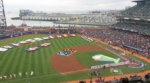

This is a website about the WBC pools and Rosters, The pools will list the five teams in it, and the rosters will mention the pitchers, catchers, infielders, outfielders, and some DH. There are 4 pools, and the group stage will play in San Juan, Houston, Tokyo, and Miami.

Image by unknown, from Wikimedia Commons